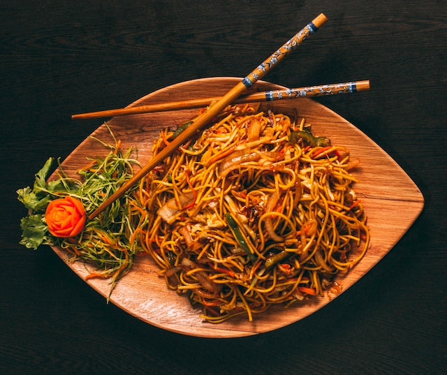

Noodles

Noodles are a type of food made from unleavened dough that is typically made from wheat, rice, or other grains. They are a staple food in many cultures and cuisines, particularly in Asian countries such as China, Japan, and Korea.
Noodles come in a variety of shapes, sizes, and textures, depending on the type of dough used and the method of preparation. They can be thin or thick, flat or round, and can be cooked in a variety of ways, such as boiling, frying, or stir-frying.
Ingredients
- 8 oz. noodles (such as udon, soba, or egg noodles)
- 1-2 tablespoons oil (such as vegetable, canola, or peanut oil)
- 2 cloves garlic, minced
- 1-2 cups vegetables (such as sliced bell peppers, onions, carrots, or snow peas)
- 1/2 pound protein (such as sliced chicken, beef, pork, shrimp, or tofu)
- 2 tablespoons soy sauce
- 1 tablespoon oyster sauce (optional)
- Salt and pepper to taste
- Garnishes (such as chopped green onions, sesame seeds, or cilantro)
Steps
- Cook the noodles according to the package instructions until they are al dente. Drain and set aside.
- Heat a wok or large skillet over high heat. Add 1 tablespoon of oil and swirl it around the pan to coat it.
- Add the minced garlic to the pan and stir-fry until it is fragrant.
- Add the vegetables to the pan and stir-fry until they are slightly softened.
- Add the protein to the pan and stir-fry until it is cooked through.
- Add the cooked noodles to the pan and stir-fry everything together until it is well combined.
- Add the soy sauce and oyster sauce (if using) to the pan and stir-fry until everything is well coated.
- Season with salt and pepper to taste.
- Serve the stir-fried noodles hot, garnished with chopped green onions, sesame seeds, or cilantro if desired.